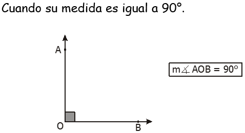
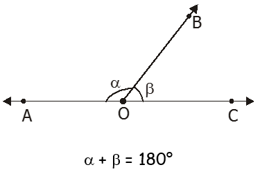
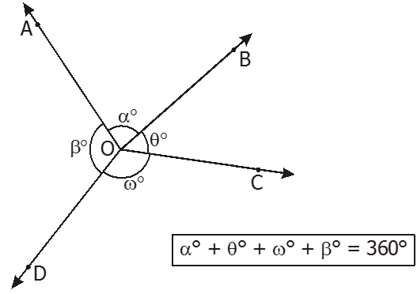

Clasificación de Ángulos
5.1. Según sus medidas:
A) ÁNGULOS CONVEXOS
a) Ángulo agudo
b) Ángulo recto

c) Ángulo obtuso
d) Ángulo llano
B) ÁNGULO NO CONEXO
Cuando su medida es mayor que 180° y menor que 360°
5.2. Según la posición de sus lados:
A) Ángulos adyacentes
Son dos ángulos que tienen el mismo vértice y además están situados a distintos lados de un lado común.
B) Ángulos adyacentes suplementarios
Los ángulos AOB y BOC son adyacentes.

C) Ángulos consecutivos
D) Ángulos consecutivos en un mismo semiplano
Los ángulos AOB, BOC, COD y DOE son consecutivos.
E) Ángulos coplanares alrededor del vértice

F) Ángulos opuestos por el vértice